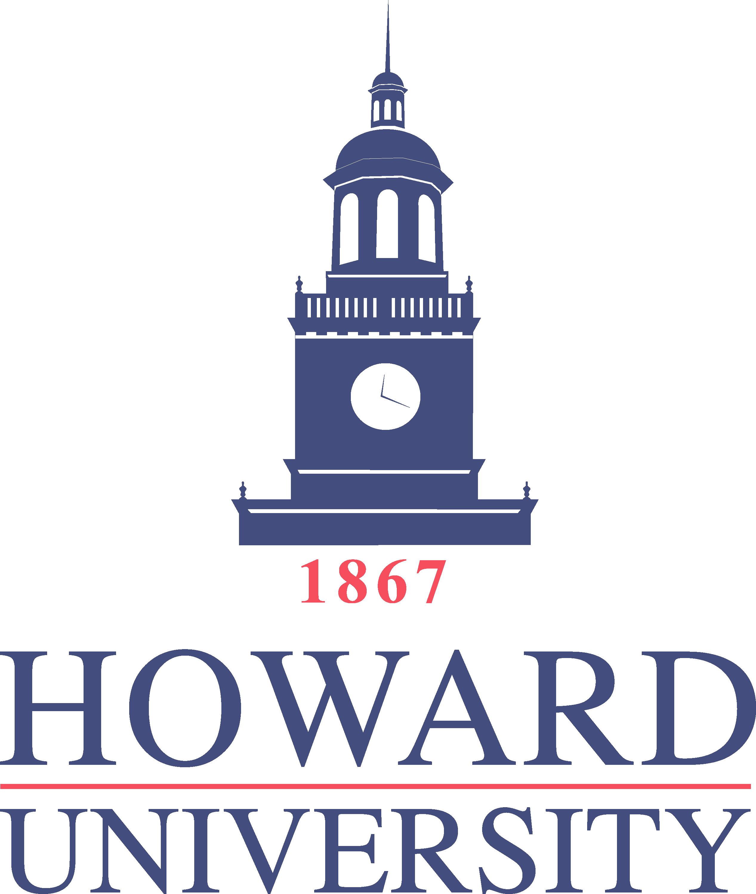
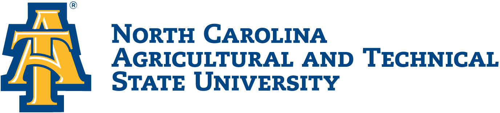

Spelman College is a private, liberal arts, women's college in Atlanta, Georgia. The college is part of the Atlanta University Center academic consortium in Atlanta. It currently hosts the Google in Residence Program, which enables students to engage and learn from software engineers in the industry.

Howard University is a private, federally chartered historically black university in Washington, D.C. It is categorized by the Carnegie Foundation as a research university with higher research activity and is accredited by the Middle States Commission on Higher Education.

The university is also well recognized for its degree program in engineering. The university's College of Engineering has consistently ranked first in the nation for the number of degrees awarded to African Americans at undergraduate level.